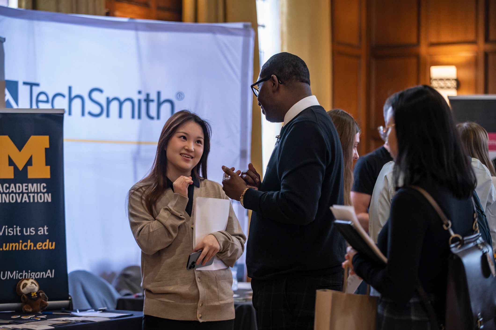

Networking & Connections
STEP 1: FIND ALUMNI
WHERE TO FIND ALUMNI
CDO Resources
UMSI LinkedIn Group
Alumni
Tool
CareerLink (employer contacts)
UCAN
Alumni Career Connections
Networking or recruiting events
Your network: UMSI & beyond
- Friends and peers (your own personal network)
- Faculty, supervisors, mentors (your own professional network)
- LinkedIn search
STEP 2: GET A RESPONSE
Don’t get discouraged by low response rate - average response rate to “cold messages” is around 20%. Each contact you connect with is an important and valuable addition to your network!
Goal: get a response
- Phone call
- Zoom/Video Meeting
- In-person meeting
- Email communication
DO’S & DON’TS
DO:
- Keep it short: demonstrate that you respect their time
- Establish a time frame: it’s easier to say yes to 20 minute coffee chat in the next 2 weeks than an undefined time commitment=
- Personalize the message: convey your respect & value for them as an individual
DON’T:
- Do NOT ask for any information that is readily available online
- NEVER send your resume first. Always ask for permission
- Do NOT begin by asking for a referral - build the relationship first
- NEVER ask for a job!
WRITING YOUR EMAIL TO GET A RESPONSE
- Write a descriptive & enticing subject line
- Start with context that connects you
-
Clearly state what you're looking for & why you’re reaching out
- Be specific - what is your “ask?”
- Be flattering - why are you reaching out to them in particular?
- Be concise - respect their time & keep it short
- Make it easy to say yes - define the timeline
- Say thank you
WRITING YOUR LINKEDIN MESSAGE TO GET A RESPONSE
- Be (extra) concise - LinkedIn limits you to 300 characters*
- Start with context that connects you
-
Clearly state what you're looking for & why you’re reaching out
- Be specific - what is your “ask?”
- Be flattering - why are you reaching out to them in particular?
- Be concise - respect their time & keep it short
- Make it easy to say yes - define the timeline
- Say thank you
*Pro tip: If you’re a part of the UMSI LinkedIn group you can message other members without this word limit!